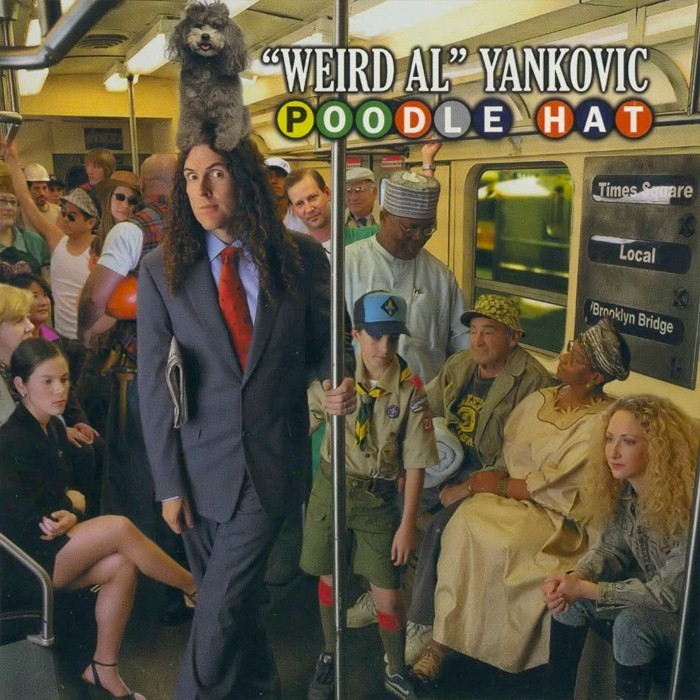
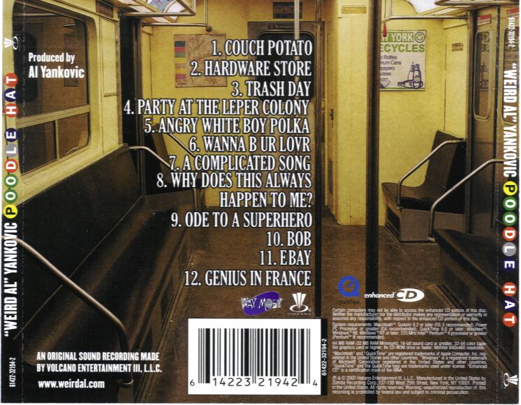
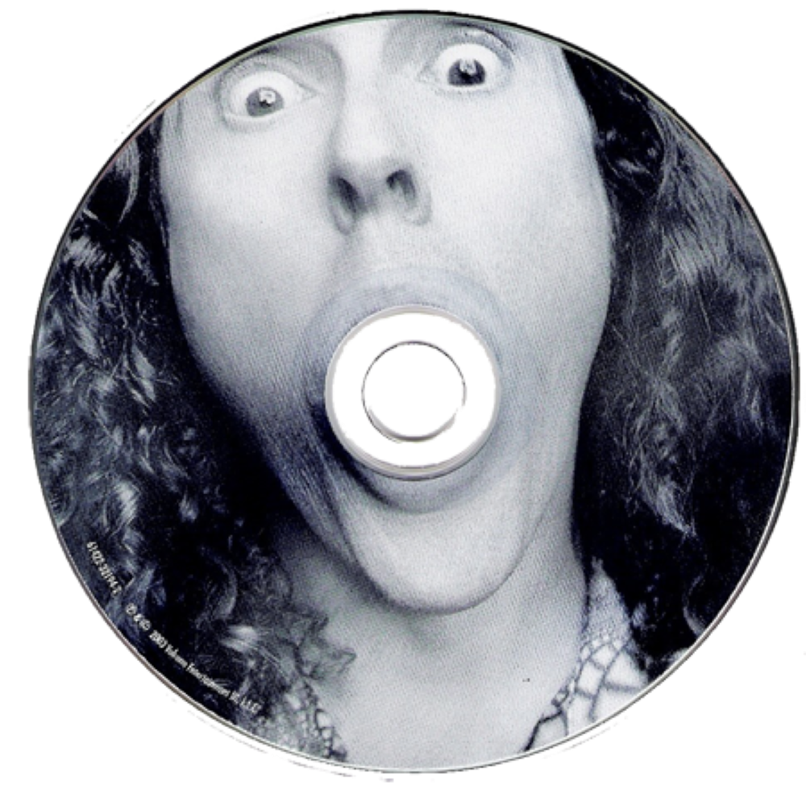

Poodle Hat é o décimo primeiro álbum de estúdio do músico americano de paródias "Weird Al" Yankovic, lançado em 20 de maio de 2003. Foi o quinto álbum de estúdio produzido pelo próprio Yankovic. Seus estilos musicais são construídos em torno de paródias e pastiches da música pop do início dos anos 2000. O primeiro single do álbum, "Couch Potato", uma paródia de "Lose Yourself", de Eminem, não conseguiu entrar nas paradas musicais. Quatro anos depois, a música "eBay", uma paródia de "I Want It That Way", dos Backstreet Boys, alcançou a 15ª posição na Bubbling Under Hot 100 Singles.
O álbum inclui cinco paródias: "Couch Potato", "eBay" e versões paródicas de "Hot in Herre", de Nelly, "Complicated", de Avril Lavigne, e "Piano Man", de Billy Joel. O álbum também inclui seis músicas originais, várias das quais não parodiam uma música específica, mas sim os estilos de Ben Folds, Beck e Frank Zappa. Um medley de músicas populares em estilo polca também aparece no álbum. Um videoclipe para a música "Couch Potato" foi planejado, mas acabou sendo cancelado depois que Eminem se opôs à sua produção.
Poodle Hat foi lançado como um CD aprimorado (Enhanced CD), o que significa que, quando o disco é colocado em um computador, é possível visualizar conteúdos extras, incluindo versões alternativas das músicas, vídeos curtos e galerias de fotos. O álbum recebeu críticas variadas; alguns críticos consideraram que o álbum representava um passo em falso artístico para Yankovic, enquanto outros apreciaram sua sátira da cultura popular do início dos anos 2000. O álbum alcançou a 17ª posição na Billboard 200. Foi o primeiro álbum de Yankovic a entrar na parada Comedy Albums da Billboard, onde chegou à 12ª posição.
Poodle Hat ganhou o Grammy de Melhor Álbum de Comédia. Essa foi a primeira vitória de Yankovic no Grammy desde 1988, quando seu videoclipe de "Fat" venceu na categoria de Melhor Videoclipe Conceitual. Parte da razão para esse longo período sem premiações foi o fato de que, entre 1993 e 2003, o Grammy de Melhor Álbum de Comédia havia sido alterado para "Grammy de Melhor Comédia Falada", o que significava que os trabalhos de comédia musical de Yankovic não eram elegíveis para indicação.